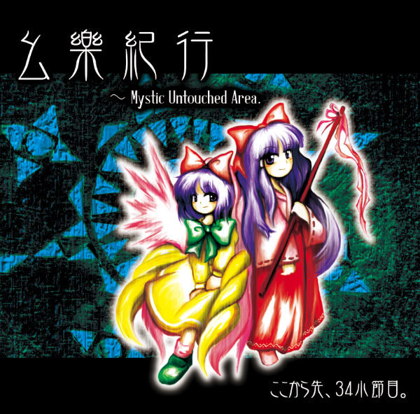
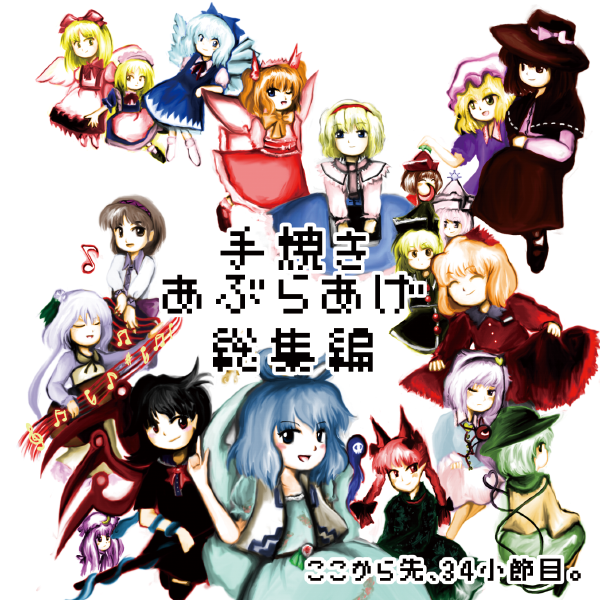

上海アリス幻樂団の新作はまさかのゆめちゆCD！？嘘ですすいません
2015/5/10(日)に行われる、第十二回博麗神社例大祭（例大祭12） にて、
秘封倶楽部＆東方旧作風アレンジCDを頒布します。

ジャケット絵などはに描いていただきました。ありがとうございます！
「非統一宇宙探訪 ～ the 23rd Century Maidens.」
1000円で頒布予定。例大祭12 お09b「ここから先、34小節目。」
今回のCDはリボさん（リボざいむ）による16ページのストーリーブックつき！
東方旧作の秘封倶楽部こと（ホントか？）、岡崎夢美と北白河ちゆりが宇宙に冒険に行くお話です。
ブックレット・ジャケットのデザインはいつもどおりのりろーさん、
収録曲の4曲はHAMURIKUさん（サークルワンタン）に担当して頂きました。ありがとうございます！
| 非統一宇宙探訪 ～ the 23rd Century Maidens. | |
| 1. 未知の花 魅知の旅 | 原曲：未知の花 魅知の旅より「未知の花 魅知の旅」 Composed by ZUN / Arranged by あぶらあげ |
| 2. 夜の海に沈む月 | 東方風オリジナル曲 Composed by HAMRIKU |
| 3. 可能性空間移動船 | 東方風オリジナル曲 Composed by HAMRIKU |
| 4. G Free | 原曲：大空魔術より「G Free」 Composed by ZUN / Arranged by あぶらあげ |
| 5. Desync | 東方風オリジナル曲 Composed by あぶらあげ |
| 6. 夜空のユーフォーロマンス | 原曲：鳥船遺跡より「夜空のユーフォーロマンス」 Composed by ZUN / Arranged by あぶらあげ |
| 7. 神秘の密林 | 原曲：鳥船遺跡より「衛星トリフネ」 Composed by ZUN / Arranged by HAMRIKU |
| 8. 23世紀の秘封倶楽部 | 夢美・ちゆりのテーマ オリジナル＋東方夢時空より「Sailor of Time」「Strawberry Crisis!!」 Composed by ZUN / Arranged by あぶらあげ |
| 9. 空に浮かぶ物体X | 原曲：東方非想天則より「空に浮かぶ物体X」 「アンノウンX ～ Unfound Adventure」 Composed by ZUN / Arranged by HAMRIKU |
| 10. Beyond Dream ～ 夢は時空を越えて | 原曲：東方夢時空より「夢は時空を越えて」「時の風」 Composed by ZUN / Arranged by あぶらあげ |
また、個人的に参加しました合同CD「Young Leaves」(円,新譜)、「Extra
Attack!!」(500円,旧譜)も委託頒布させて頂きます。
旧譜の「幺樂紀行」（1000円）、「手焼きあぶらあげ総集編」（300円）もいくつか持っていきます。
5/10の例大祭12、お09b「ここから先、34小節目。」スペースでお待ちしております。
社務所スペース（事故スペース）と合体サークルしております。なにとぞ。
あともう少ししたら同人ショップに委託する予定……？
C86当選いたしました。2日目（2014/8/16,土曜日）、ピ-04b「ここから先、34小節目。」にて新譜を出します。
ジャケット絵などはのりろーさんに描いていただきました。ありがとうございます！
「幺樂紀行 ～ Mystic Untouched Area.」
道中曲を原曲とした旧作風アレンジに、道中曲風の東方風自作曲。
ゲストにサークルワンタンの HAMRIKU 氏をお呼びし、
東方旧作風の世界がより広がったCDとなっております。
1000円 で頒布の予定です。
8/16(土) コミックマーケット86 2日目
ピ-04b 「ここから先、34小節目。」
にてお待ちしております。
| 幺樂紀行 ～ Mystic Untouched Area. | |
| 1. 遠野幻想物語 | 原曲：東方妖々夢より「遠野幻想物語」 Composed by ZUN / Arranged by あぶらあげ |
| 2. 死霊の夜桜 | 原曲：東方神霊廟より「死霊の夜桜」 Composed by ZUN / Arranged by HAMRIKU(guest) |
| 3. Lazy Rain | 東方風オリジナル曲 Composed by あぶらあげ |
| 4. 愉しげな星空、未知との遭遇 | 東方風オリジナル曲 Composed by HAMRIKU(guest) |
| 5. Romantic Children | 原曲：幺樂団の歴史2より「Romantic Children」 Composed by ZUN / Arranged by あぶらあげ |
| 6. 車椅子の未来宇宙 | 原曲：大空魔術より「車椅子の未来宇宙」 Composed by ZUN / Arranged by HAMRIKU(guest) |
| 7. 博麗 ～ Eastern Wind | 原曲：東方封魔録より「博麗 ～ Eastern Wind」(MIDI) Composed by ZUN / Arranged by あぶらあげ |
| 8. 歪の幻想郷 | 東方風オリジナル曲 Composed by HAMRIKU(guest) |
| 9. 上海紅茶館 ～ Chinese Tea | 原曲：夢違科学世紀より「上海紅茶館 ～ Chinese Tea」 Composed by ZUN / Arranged by あぶらあげ |
| 10. アリスマエステラ | 原曲：東方幻想的音楽より「アリスマエステラ」 Composed by ZUN / Arranged by あぶらあげ |
同時に、下にあります「手焼きあぶらあげCD」も再頒布致します。
また、「外柿山」（とがきさん）の権太夫さんのCDも委託という形で頒布させていただきます。
こちらも素晴らしい東方アレンジを制作されてるので、宜しければ聴いてみてはいかがでしょうか。
今までこっそり手渡しで配ってきた「手焼きあぶらあげCD」の総集編です。

絵はのりろーさんに描いていただきました。ありがとうございます！
「手焼きあぶらあげ総集編」
頒布価格：300円
2014/5/11(日) 博麗神社例大祭11
い04a 「ここから先、34小節目。」
にて頒布致しました。
| 手焼きあぶらあげ総集編 | |
| 1. PSEUDO STRANGE GAME | 原曲：かわいい悪魔 ～ Innocence, メイド幻想 ～ Icemilk Magic |
| 2. CIRNO CORE | 原曲：おてんば恋娘の冒険 |
| 3. GBソフト「○ラゴンクエスト ○ンスターズ サニーのワンダーランド」より | 原曲：サニーミルクの紅霧異変 |
| 4. 「ブクレシュティの人形師」 旧作アレンジ | |
| 5. 16bitの幽霊樂団 | 原曲：幽霊楽団 ～ Phantom Ensemble |
| 6. 大空魔術FMメドレー | 原曲：G Free, 車椅子の未来宇宙 など |
| 7. 紅葉 -MOMIJI- | 原曲：人恋し神様 ～ Romantic Fall |
| 8. FCソフト「サトリス」より「コロブチカ・トロイカ」 | 原曲：少女さとり ～ 3rd eye, 無間の鐘 ～ Infinite Nightmare |
| 9. FCソフト「サトリス」より「テクノサトリス」 | 原曲：妖怪裏参道, 魔法少女達の百年祭 |
| 10. 旧灼熱地獄地下水道 | 原曲：廃獄ララバイ |
| 11. 古きユアンシェン ～Ancient Hermit | 原曲：古きユアンシェン |
| 12. 幻想浄瑠璃 -東方旧作風 Remix- 「不思議の大冒険 チルノ見参！２＋１」収録 |
原曲：幻想浄瑠璃 |
| 13. 「感情の摩天楼 ～ Cosmic Mind」旧作アレンジ | |
| ？？？ | こちらのゲームのBGMです。 |
ちなみにおとなりのサークル「外柿山」（とがきさん）と合体スペースで出します。
こちらも素晴らしい東方アレンジを制作されてるので、宜しければ聴いてみてはいかがでしょうか。
これらの作品は 上海アリス幻樂団 による「東方project」の二次創作です。
原作者である ZUN 様 および 上海アリス幻樂団 様 と直接の関係はございません。